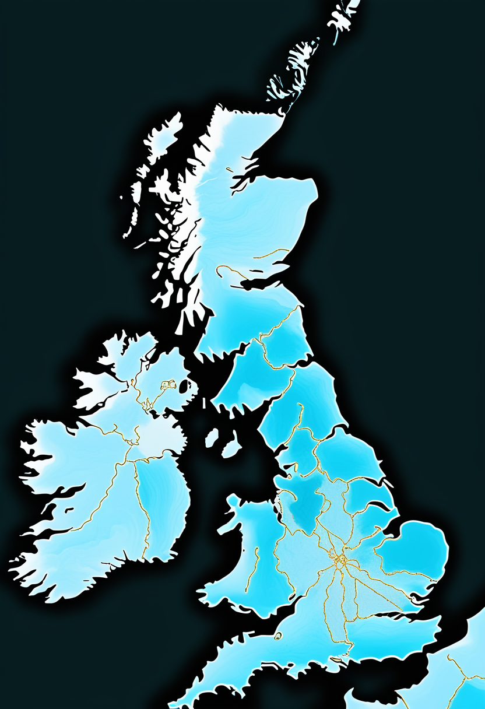

ニューヨーク州ルイス郡で、ワクチン未接種の子どもが麻疹に感染して死亡した。同州で麻疹による死者が出たのは30年以上ぶりで、来週にはPAHOが米国の『麻疹排除』の地位を見直す会合を控えている。基盤の章ではこれに加え、エボラの致死率が51.6%に上がったことと、ナイジェリア北東部で疑い例2人が見つかったことを届ける。自由の章ではALS患者が視線入力と脳波入力を自宅で比べる試験が始まったことと、中国の脳機接口大会が11/19に開幕することを、畏敬の章では42年越しの素粒子崩壊の証拠とJWSTの最遠銀河候補が実は褐色矮星だったことを、美の章ではAIの意識をめぐる企業間の対立と、仮想の脳でてんかん手術を計画する臨床試験を取り上げる。
前号(11/4号)は乳牛から感染した鳥インフルエンザの死者を今日の一本に選んだが、今号はワクチンで防げる麻疹に戻した。ニューヨーク州と北部ルイス郡の保健当局は11/2(月)、郡内の子どもが麻疹に感染したあと死亡したと発表した。同州で麻疹による死者が出たのは30年以上ぶり。当局は年齢や性別を公表していないが、ニューヨーク・タイムズは「ワクチンを受けていない男の赤ちゃん」と報じている(当局は未確認)。ルイス郡の確定例はすべてワクチン未接種で、11/2にも10例が新たに報告された。州は10月に麻疹の災害緊急事態を宣言しており、CDCも専門家を派遣している。米国全体の麻疹は4,852例(CDC、10/29時点、前々号既報)で、汎米保健機構(PAHO)が米国の『麻疹排除』の地位を見直す会合(11/10〜13と報道)を来週に控えている。ワクチン接種率の低下が、実際の死につながっていることを示す出来事だ。

北アイルランドの新聞News Letterは11/4、北アイルランドとウェールズで生まれた赤ちゃんには、SMAを新生児スクリーニングで見つける仕組みがないと報じた。スコットランドは2026年3/23から全ての新生児に検査を行い、イングランドでも導入が決まっている(開始時期は2026年10月・2027年10月と資料に差があり要確認)。英国では保健政策が地域ごとに決まるため、患者団体は「住む場所で治療の早さが変わる」と訴えている。生後早く治療を始めるほど運動発達の到達度が高いことが各国の研究で示されている。
SMA News Todayは11/4、トルコでスピンラザ(ヌシネルセン)の治療を4年以上続けたSMA 2型・3型の患者の多くで、意味のある運動機能の改善がみられたという実臨床の研究(Brain and Development誌)を紹介した。1型では結果がばらつき、人数が少なく病気が進んだ患者が多かったため、はっきりした結論は出せなかった。無作為化試験ではなく、治療を受けた患者を追った観察研究である点に注意。
英国は地域ごとの保健政策の差が、早期発見という『命を分ける差』になっている。トルコの長期実臨床は、長く続けた治療の積み重ねが2型・3型には届くことを示した。
米Cognixionは11/4、ALSの人向けの装着型BCI(脳波で操作する意思伝達装置)の研究「CHOICE」で参加者の募集を始めたと発表した。米国立聴覚・伝達障害研究所(NIDCD)が資金を出し、試験番号はNCT07871071(10/7登録、募集中)。すでに視線入力装置を使う人が、自分の装置と、目の動きに頼らない脳波入力を加えたCognixion ONEを自宅で使い比べる設計とされる(視線入力との比較の詳細は報道ベース)。病気が進んで目の動きも弱くなった人に、どの入力方法が合うかを探る研究。
21世紀経済報道は11/4、「2026脳機接口大会」が11/19に開幕すると報じた。中国では脳機接口(BCI)企業の資金調達と上場準備が続いている。新浪の速報まとめによると、上海の埋め込み型BCI企業・阶梯医疗(StairMed)の上場準備の指導役は華泰聯合証券で、博睿康や強脳科技(BrainCo)も株式市場への上場をめざしていると伝えられ、「BCI第1号銘柄」を争う構図になっている。大会の主催者や内容の詳細は一次発表で要確認。
視線入力とBCIを『どちらか』ではなく、病気の進み方に合わせて使い分ける研究が実際に動き出した。中国はお金と上場の面で勢いが続き、11/19からの大会で新しい発表が出るか注目。
州と郡は11/2、ルイス郡の子どもが麻疹に感染して死亡したと発表した。同州の麻疹による死者は30年以上ぶり。当局は年齢・性別・居住地を明らかにしていない。ルイス郡の公衆衛生当局によると、郡の確定例はすべてワクチン未接種で、11/2に10例が新たに加わった(郡の累計は報道により11〜15例超と差があり要確認)。州全体の今年の麻疹は10/24時点で178例。州は10月に災害緊急事態を宣言し、州の要請でCDCが疫学の専門家を現地に送っている。
コンゴ民主共和国(DRC)保健省は11/2(月)、ブンディブギョ型エボラの感染者が10,414例、死者が5,372人になったと発表した。致死率は51.6%で、上昇は「感染の加速ではなく、過去のデータをさかのぼって修正したため」と説明している。アフリカCDCの集計(確定10,444例・死者5,376人、ケニアとウガンダの各2人を含む)とほぼ一致する。最も被害が大きいのは北東部のイトゥリ州で、確定7,040例・死亡3,271人。ケニアでは9例が報告され、ウガンダの流行は終息が宣言済み。承認されたワクチン・治療薬はまだない。
ナイジェリア疾病対策センター(NCDC)は10/31(土)、北東部でエボラの疑い例が2人見つかり、隔離して接触者の追跡を始めたと発表した。検査は続いており、確定ではない。州名や渡航歴は公表されていない。同国では10/20、ウガンダから首都アブジャに到着した女性が初の確定例となっていた(WHOによればブンディブギョ型)。疑い例が確定すれば、国内で感染が広がった可能性があるとロイターは伝えている。なお、首都圏などの別の疑い例には陰性と判明したものもあり、混同に注意が必要。
米国では麻疹で子どもが亡くなり、来週のPAHOの判断にも影響しうる。エボラは数字の修正で致死率が5割を超え、ナイジェリアでは国内感染の有無が焦点になっている。
CERNのLHCb実験は、中性のB中間子(ボトムクォークを含む粒子)が2つのミューオンに崩壊する現象の「証拠」を3.2σの確かさで報告した(11月初め、マンチェスター大などが発表)。標準理論では約100億回に1回しか起きないとされ、測った頻度は予測と合っていた。こうしたまれな崩壊は、まだ見つかっていない粒子の影響に敏感で、ゼプトメートル(1メートルの10億分の1のさらに1兆分の1)の世界を探る手段になる。ただし「発見」とされる5σには届いていない。改良した検出器で2030年代初めまでデータを集める。
JWSTの画像で、ビッグバンから約9,000万年後(赤方偏移z≈32)の銀河かもしれないとされた天体「Capotauro」が、天の川銀河の中にある低温の褐色矮星(恒星になれなかった天体)だとわかった。約3.5年あけて撮った画像で天体の位置がずれており(固有運動)、遠い銀河ではないと6σ以上の確かさで否定された。分類は最も低温のY型とされる。2つの「初期銀河」候補が褐色矮星だった例もあり、色だけで最遠の銀河を判定する危うさを示した。論文は査読前。
ESAの宇宙望遠鏡Euclidは、最初の本格的なデータ公開(DR1)を11月に予定している。約1,900平方度の空の画像・カタログ・スペクトルを公開し、宇宙論の解析に使う高次のデータは2027年半ばに出す計画。正確な日付は未発表(11/12とする報道もあるが要確認)。医学では、Lancet Countdown 2026報告(10月下旬)が気候変動を「世界的な健康の緊急事態」と位置づけ、熱による健康被害が加速していると警告した。熱による死者数は報道ごとに数字の定義が異なるため、本誌では引用しない。
素粒子も天文も『確かめ直し』の週。LHCbは証拠の段階で、JWSTの最遠銀河候補は撤回に近い。Euclidの本格データ公開は、宇宙論の次の一歩になる。
MicrosoftのAI部門を率いるムスタファ・スレイマン氏は11/1の投稿で、今のAIは意識をもたず苦しむこともないとし、訓練中に意識の兆候が出たら開発を止めるべきだと主張した。11/2の続報では、この主張は、AIが自分の意識を「不確か」なものとして扱うよう求めるAnthropicの方針への批判だと伝えられた。スレイマン氏は、AIが意識をもつ証拠があるなら公表して議論すべきだとも述べた。AnthropicはNasdaqへの上場を申請中(10月下旬報道)で、AI企業の「AIの心」をめぐる姿勢の違いが表に出てきた形。
脳波などの「神経データ」を守る法律は、米国でコロラド・カリフォルニア・モンタナに続き、2026年にバーモント州(H.814)が加わった。コロラドとモンタナは、集める前の明示的な同意と、第三者に渡す前の別の同意(または拒否の選択肢)を求める。一方、連邦のMIND法案(FTCに神経データの調査を求める内容)は成立していない。調査では、一般向けの脳波機器30社のうち29社が、利用者の神経データにほぼ制限なくアクセスできる規約だったという。BCIや脳のデジタルツインが広がる前提となる「心のプライバシー」のルールづくりはまだ途中。今週の新しい動きではなく、背景としての整理。
患者一人ひとりの脳画像から「仮想の脳」(脳のデジタルツイン)をつくり、発作の起きる場所をシミュレーションして手術の計画に使う試み「EPINOV」がフランスで進んでいる。11病院で約400人(356人とする資料もある)が参加した大規模な臨床試験で、評価の段階は2026年末に終わる見込み。これまでに示されたのは症例の報告など予備的なデータで、標準的な治療になるかは最終結果しだい。人間のデジタルツインが「実際の治療の判断」に使えるかを確かめる、数少ない本格的な試験として注目される。
『AIに心はあるか』は、企業の方針の違いとして表に出てきた。一方で脳のデータを守るルールや、脳のデジタルツインが実際の治療判断に使えるかの検証は、どちらも途中経過として積み重なっている。
今日は、ワクチンで防げる病気が実際に命を奪ったことを示す一日だった。ニューヨーク州では30年以上ぶりに麻疹による子どもの死者が出て、来週にはPAHOが米国の『麻疹排除』の地位を見直す。エボラは数字の修正で致死率が5割を超え、ナイジェリアでは国内感染の有無が焦点になっている。自由の章では、視線入力とBCIを病気の進み方に合わせて使い分ける試験が動き出し、畏敬の章では42年越しの素粒子探索と、最遠銀河候補の『訂正』が同じ週に報じられた。美の章では、AIに心はあるかという企業間の立場の違いと、仮想の脳を実際の手術計画に使う試みが並んだ。
数字が示す重さと、それでも前へ進む研究と備え — 両方を一緒に記録しておきたい。では、また明日の朝に。 — JaH